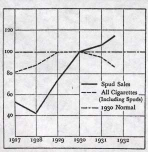
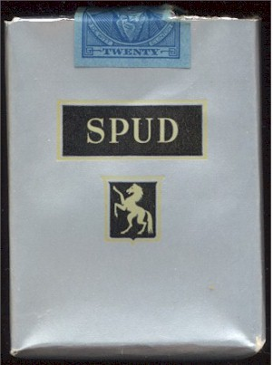
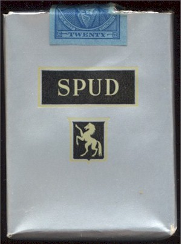

Always Under
Construction
Always Under
Construction
The first person to take advantage of the properties of menthol and formulate a mentholated cigarette was Lloyd "Spud" Hughes of Mingo Junction, Ohio back in the 1920's. Aa a young man, Hughes was afflicted with asthma and his mother had given him menthol crystals so that he might inhale the vapors. As the story goes, Spud preferred smoking cigarettes, he hid his cigarette supply overnight in a baking powder tin along with the menthol. In the morning he discovered that the cigarettes had taken up the menthol flavor. At first he just smoked the cigarettes himself. Later, he offered them to the railroad and mill workers who frequented his father's restaurant. Finally, Spud filed the patent on the process on July 31, 1924 (patent granted September 25, 1925)and began to contract the maufacturer of Spud mentholated cigarettes through Bloch Brothers Tobacco Company. He set out in his car and canvassed the Ohio Valley region selling them. In 1926, Hughes contacted the Axton Fisher Tobacco Company of Louisville, Kentucky to manufacture more of Spuds. Woodford Axton immediately recognized the potential for this unique cigarette and offered Spud Hughes \\$90,000. The deal was accepted and Mr. Hughes went on a two year spending spree. Axton Fisher hired a New York advertising firm to promote Spud's nationally and sold stock in the company for the first time to finance expansion. These decisions led to the establishment of Spud as the 5th largest selling cigarette in the U.S. by 1932.
As seen in the graph below the 20 cents a pack Spud actually increased in sales during the depression and caught up with all but the big fifteen cent brands, e.g., Camels, Lucky Strike (Fortune, November 1932). With competition from Brown and Williamson's menthols Penquin in 1931 and Kool in 1933 the price of SPUD was reduced to 15 cents a pack in 1933.
 

In 1944 Philip Morris bought Axton Fisher Tobacco Company and the manufacture of Spud cigarettes fo domestic sales was discontinued in 1963 (Philip Morris Document 2012518595 - March 28, 1963). An article in the Lexington Herald-Leader (February 25, 1999) indicated that Philip Morris began phasing out production at its Louisville plant (the old Axton-Fisher facility) before July, laying off about 1400 union and non-union workers by December 2000.
{kind=link}
{kind=link}